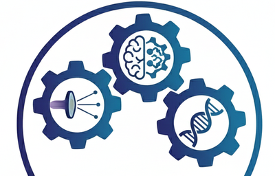
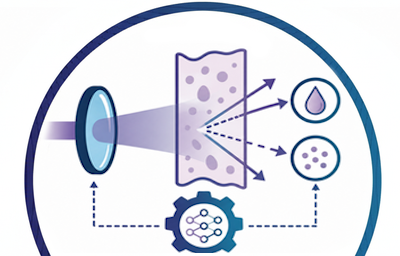
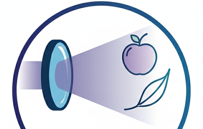
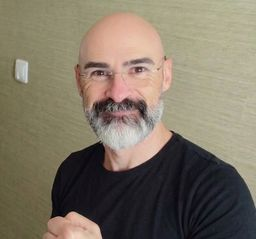
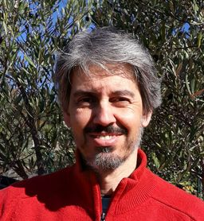
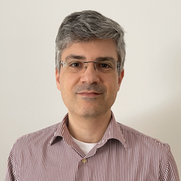
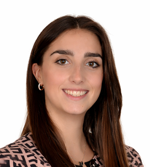
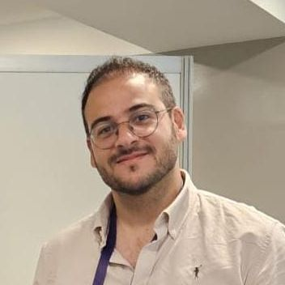

We do research in AI applied to NIR spectroscopy, physics-informed models, and non-linear optical methods to understand how light moves through complex matter, from biological tissues to agri-food systems. We are a spin-off of the Sensing Group of CEOT@UAlg.
What we do
We prototype methods that separate absorption vs. scattering, design spectral deep learning pipelines, and validate them on real-world sensing problems.
Discover how light encodes matter—and decode it responsibly with AI.
DeepLight Lab explores the intersection of applied non-linear optics (light in turbid media), spectroscopy (Vis–NIR), and artificial intelligence. Our mission is to craft non-destructive analysis and quality control methods while deepening understanding of light–matter interaction in complex media. Due to our background we have a special emphasis building chemometric models internal quality accessment of fruits, vegetables and other agri-food products. These same tools can also be used to study biological processes in detail (maturation, ripening, senescence, etc.).
Experiments and AI pipelines that respect living tissues and delicate products.
Optics, signal processing, biologists and machine learning teams working side by side.
Power-up NIR chemometrics with advanced modelling capabilities.
Designing neural networks for NIR data with explainability overlays and uncertainty-aware calibration.

Separating absorption from scattering in tissue, coupling physical priors to deep learning models.

Rapid, non-destructive sensing for quality control, disease detection, and nutritional profiling.

What guides our roadmap.
Develop useful and reliable methods for spectral AI.
Release curated, open-access datasets for spectroscopy.
Translate advances into reliable tools for partners.
Train MSc, PhD, and post-docs on spectral AI and optics.
Selected recent highlights.
Explore the first release of our NIRBENCH, a benchmark for evaluating how deep learning architectures applied to NIR spectral analysis generalize across mutitple chemometric tasks.
(under active development)
Review in TrAC: Convolutional neural networks in Vis–NIR chemometrics: From contradiction to conditional design
Using Data-Derived Priors to Guide CNN Architecture Design for NIR Chemometrics
arvix preprint (under review)
A github repository with some of the code we develop and publish
Exploring CNN architectures for dry matter prediction in fruit from multi-fruit near-infrared spectra
Explainability of CNN architectures for fruit dry matter predictions
A tutorial on automatic hyperparameter tuning of deep spectral modelling for regression and classification tasks
A Non-Destructive Approach to Assess Dehusking Efficiency Using Diffuse Reflectance Spectroscopy and Kubelka-Munk Theory
Estimation of soluble solids content and fruit temperature in'Rocha'pear using Vis-NIR spectroscopy and the SpectraNet-32 deep learning architecture
Follow the lab cadence.
Funded Project
Computational project 2025.12264.CPCA.A1 running on Deucalion HPC: Benchmark of deep learning models for NIR chemometrics.
Equipment
Our lab now has access to a NIREOS HERA VNIR hyperspectral camera and a NIREOS TRICLOPS spectrometer.
Closing project
IG19145 - Artificial intelligence methods for spectral data processing to solve food fraud and authenticity issues (SensAIfood)
Donations
We are accepting donations of consumer-grade, mid- to high-end GPUs (RTX 3090, RTX 4090, RTX 5090 or RTX 6000 PRO) to support our research.
Hands-on and interdisciplinary.

Dário PassosNon-linear optics, deep learning for NIR spectral analysis, deep chemometrics.

Rui GuerraNIR Spectroscopy, linear and non-linear optics, signal processing, Chemometrics, hardware deployment.

Jaime MartinsData curation, deep learning, machine learning, benchmarking.
Past visitors and friends...

Irene Locatelli, University of Milan (IT),
PhD Internship Jan-Apr 2026
Jesus Galan, University of Cordoba (ES),
PhD Internship Sep-Oct 2025

Jose Entrenas, University of Cordoba (ES),
STSM Jun-Jul 2026
Support and collaborations that power the lab.